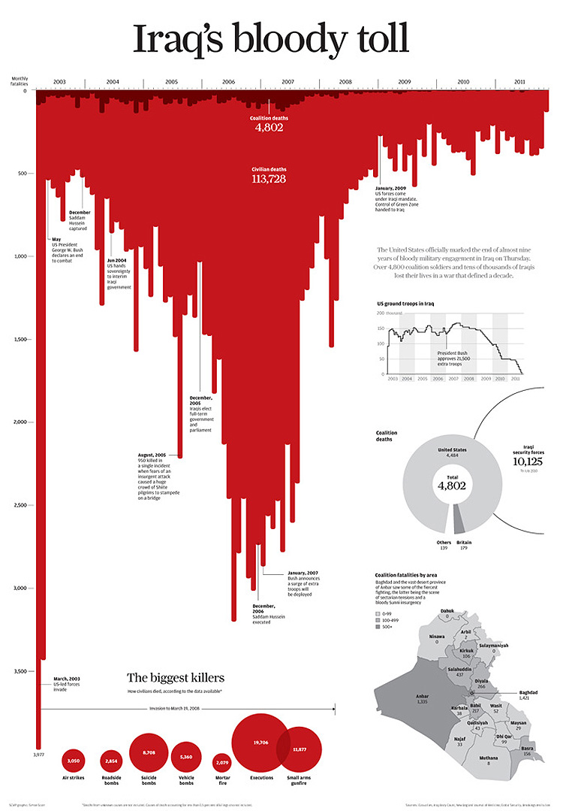
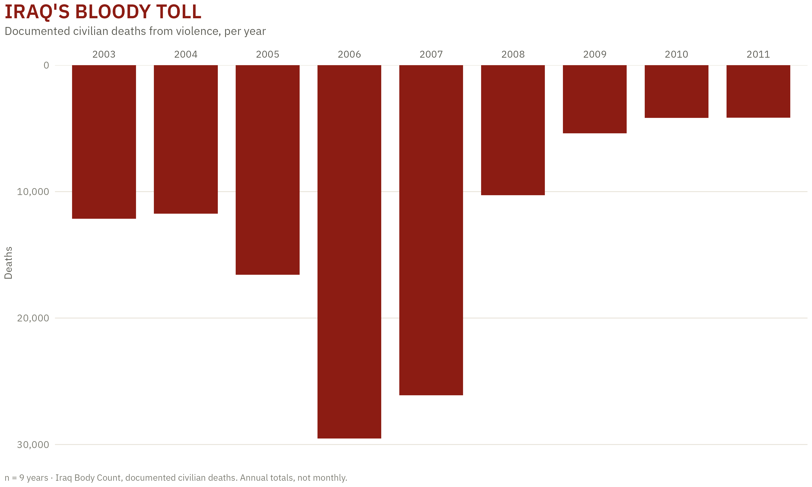
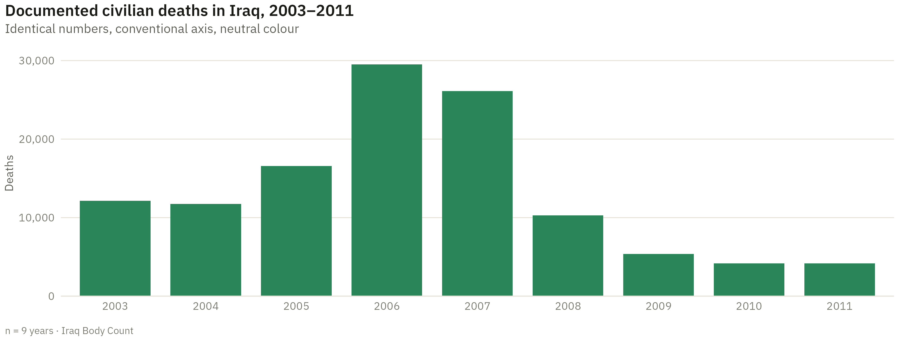

An inverted vertical axis, which is on every list of things you must not do. Here it is the best decision on the chart. Read this one beside Gun deaths in Florida, where the identical technique produces the opposite verdict. The two pages are written as a pair.
THE ORIGINAL

“Iraq’s bloody toll” by Simon Scarr, South China Morning Post, 2011. Copyright Simon Scarr / SCMP, reproduced for criticism and review under the Dutch citation right (Auteurswet art. 15a). Not a free licence: it cannot be reused from here.
Simon Scarr’s graphic for the South China Morning Post (2011), published as coalition forces withdrew from Iraq. Deaths hang downward from a heavy title in deep red.
How to read it
Each bar is a month of documented civilian deaths, running left to right from the 2003 invasion to the 2011 withdrawal.
The bars hang down from the top, not up from the bottom. The axis is inverted: further down means more deaths.
The title sits on top of the bars so they read as running out of it, and the whole thing is a single deep red.
The resemblance to dripping blood is deliberate. The headline is “Iraq’s bloody toll”.
THE CRITIQUE
01 · Describe
A bar chart on a dark red field, with the bars descending from a title block at the top of the frame. The vertical axis is labelled and its numbers increase downward. Annotations mark specific events along the timeline.
02 · Analyse
Quantity is on length, which is accurate, and the length is anchored to a common baseline, which keeps it honest. The only unconventional decision is the direction of growth. Colour carries no data; it does rhetorical work, and the chart does not hide it.
03 · Interpret
The claim is that the war’s human cost was enormous and sustained. The inversion is what makes the bars read as bleeding rather than as growth, and the graphic wants you to feel the accumulation before you read a number.
04 · Judge
It works because there is no plausible wrong reading. A viewer who ignores the axis entirely still concludes “a lot, and worse in the middle years”, which is the true story. The inversion adds a metaphor without opening a route to a false conclusion. The Florida chart fails this same test.
THE RECREATION
Show the R code
blood <-"#8C1C13"ggplot(ibc, aes(factor(year), civilian_deaths)) +geom_col(fill = blood, width = .78) +# The inversion: reverse the y scale so bars grow downward from the top.scale_y_reverse(expand =expansion(mult =c(.06, 0)),labels = scales::label_comma()) +scale_x_discrete(position ="top") +labs(title ="IRAQ'S BLOODY TOLL",subtitle ="Documented civilian deaths from violence, per year",x =NULL, y ="Deaths",caption ="n = 9 years · Iraq Body Count, documented civilian deaths. Annual totals, not monthly.") +theme_dsvar(base_size =11, grid ="y") +theme(plot.title =element_text(colour = blood, face ="bold", size =rel(1.6)),axis.text.x.top =element_text(colour ="#5a5a52"),axis.line.x =element_blank())

Scarr’s original runs monthly across 2003–2011 and is far denser; Iraq Body Count publishes annual totals openly, so this is the annual version. The encoding decision under discussion is identical.
THE SAME DATA, THE RIGHT WAY UP
Show the R code
ggplot(ibc, aes(factor(year), civilian_deaths)) +geom_col(fill =dsvar_accent(), width = .78) +scale_y_continuous(expand =expansion(mult =c(0, .06)),labels = scales::label_comma()) +labs(title ="Documented civilian deaths in Iraq, 2003–2011",subtitle ="Identical numbers, conventional axis, neutral colour",x =NULL, y ="Deaths",caption ="n = 9 years · Iraq Body Count")

This version is more conventional and less honest about what it is doing. It presents 100,000 documented deaths in the register of a quarterly sales report, and the neutrality is itself a rhetorical choice, only an invisible one. Scarr’s chart announces that it is making an argument. Most charts make one and do not say so.
THE TEST THIS CHART PASSES
IS THERE A PLAUSIBLE WRONG READING?
Ask it of any unconventional encoding; it is more useful than a rule about which way an axis may point. Here, a reader who misses the inversion still gets “many deaths, peaking in the middle”. The bars are anchored, the quantity is on length, and the metaphor points the same direction as the data. Apply the same test to Gun deaths in Florida, which uses this exact technique, cites this exact chart as its inspiration, and fails.
SOURCES
Original: Scarr, S. (2011). Iraq’s bloody toll. South China Morning Post. Copyright Simon Scarr / SCMP; shown above at low resolution as a quotation for criticism and review. Not reusable from here.